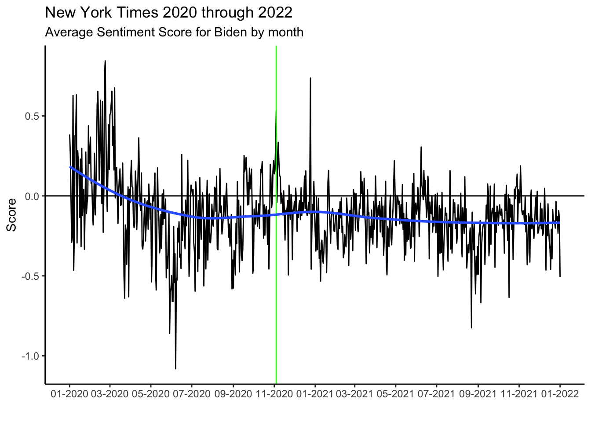
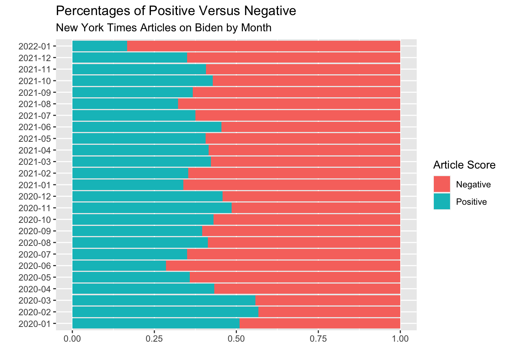
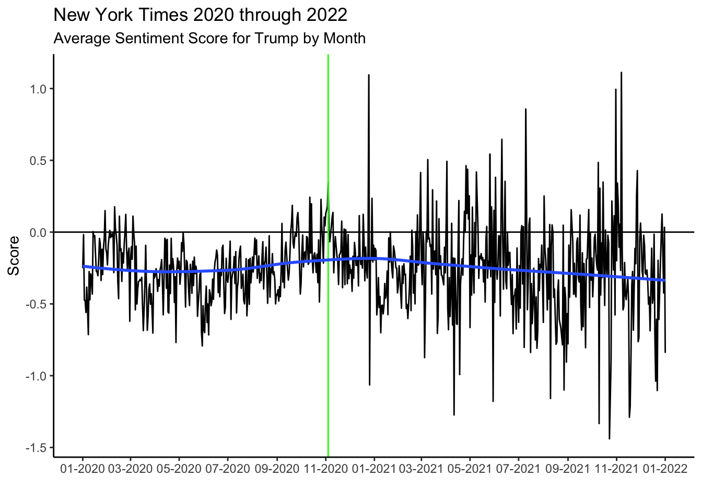
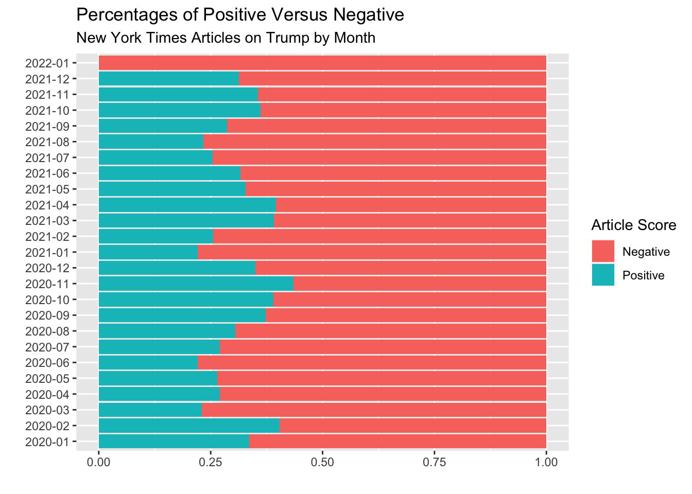
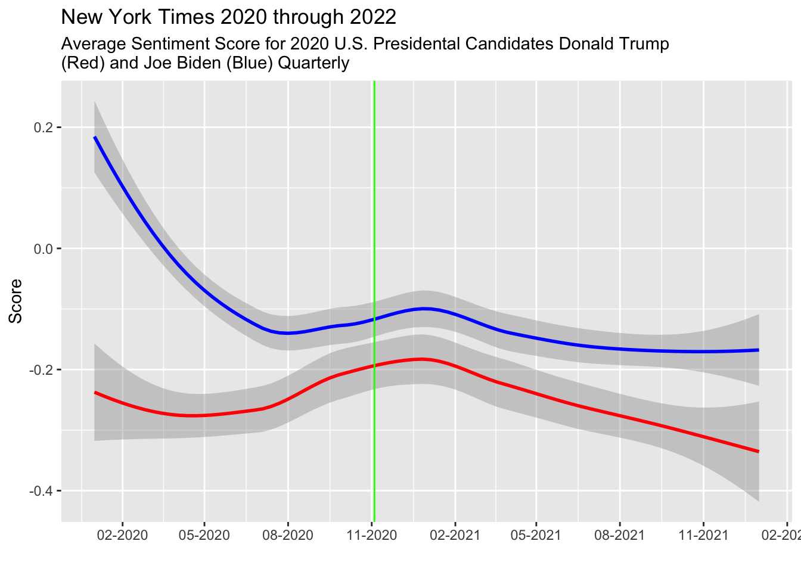
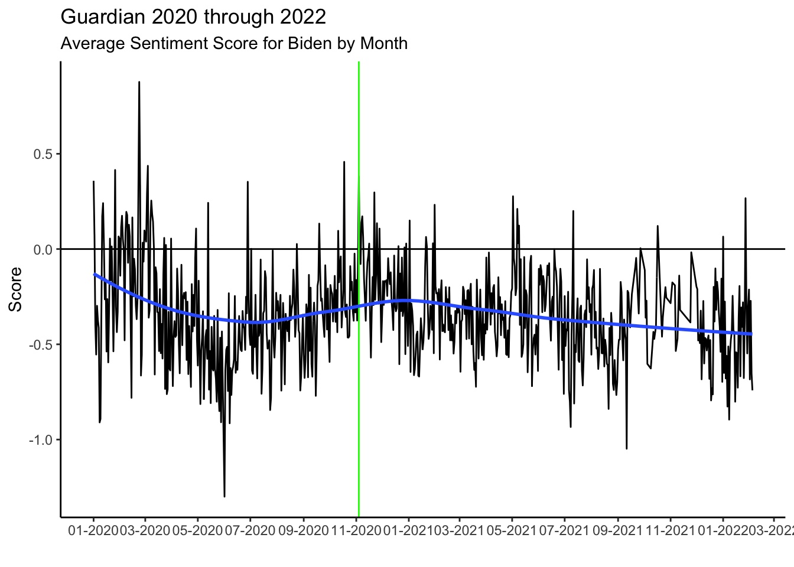
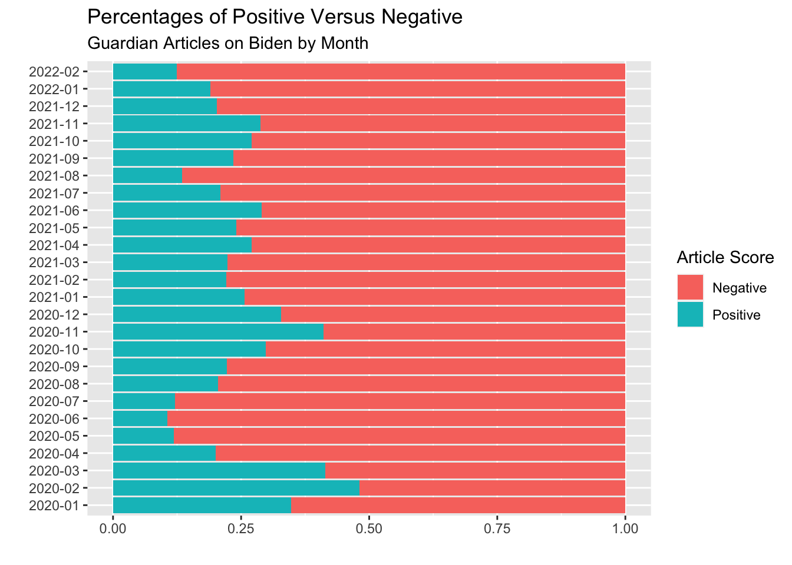
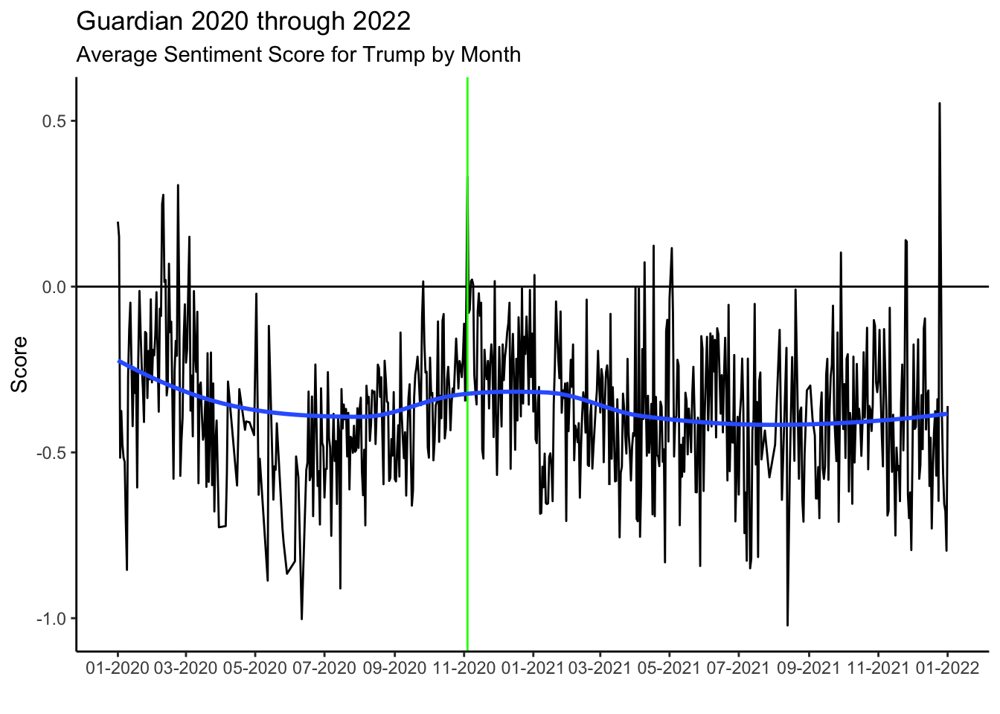
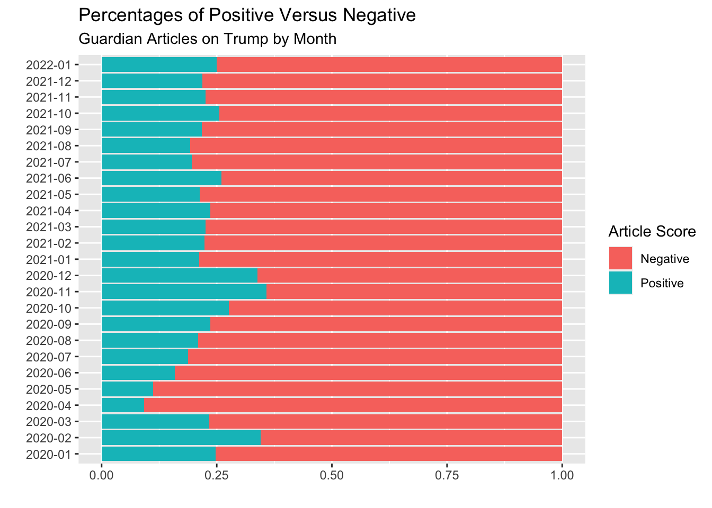
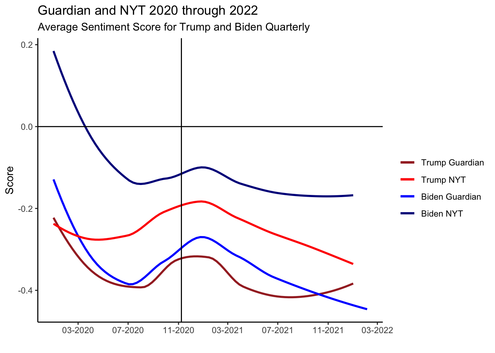

A Sentiment Analysis of News Media Coverage on Joe Biden and Donald Trump
Author
Yiyang Shi, Cecelia Kaufmann, Tam Nguyen
Published
March 1, 2023
Introduction and Backgrounds
Introduction to Our Project
Our project aims to explore the connection between how the two main candidates in the 2020 U.S. presidential election, Joe Biden and Donald Trump were portrayed in the media via sentiment analysis. To do this, we used the AFINN lexicon to longitudinally explore trends over the span of 2 years, from 2020 to 2022 to see there were connections between specific events in the world or in the candidates lives and how the media portrayed the candidates. To explore this further, we picked a news source from within the United States, the New York Times and one from the U.K., the Guardian, to see if the trends differ domestically versus internationally.
Research Questions
How do the sentiments between Donald Trump and Joe Biden vary between New York Times and Guardian articles before and after the 2020 U.S. Presidential election?
How many NYT articles about Trump/Biden are positive/negative? How many positive and negative articles for Trump/Biden for The Guardian? Is there a difference in the article percentages between the New York Times and the Guardian?
Can we correlate sentiments to significant events for both candidates?
Motivations to Our Research Questions
We decided to use sentiment analysis to approach our analysis of the articles and article text. Through our discussions, we found that sentiment analysis will help to gain a deeper understanding of how newspapers portray the two leading candidates for the U.S. 2020 election and how that changed over the span of two years. Before we can get into our data collection process and analysis of articles, it is important we define key terms and packages that we used to be able to analyze our data in a concise manner.
About Sentiment Analysis
Sentiment analysis, which is also sometimes referred to as opinion mining is a way to use natural language processing (NLP) to identify the emotional tone behind a body of text. Through different types of lexicons, a word or string of words can be identified as positive, negative, or neutral.
Lexicons and the “AFINN” lexicon
For lexicon-based sentiment analysis, which we used for this research, words in the text are labeled as positive or negative with the help of a valence dictionary. For this research, we used the AFINN lexicon, which assigns words with a score between -5 and 5, with a more negative score indicating a more negative word and vice versa. We felt for this research that a weighted lexicon dictionary would make the most sense, especially since we are comparing over time and a lot of words. One thing to note about the AFINN lexicon is many of the words that are ranked the most negative (-5) are words that have profanities or are extremely offensive. Although some of these words are featured as quotes in articles we pulled, we decided against including them in our visualizations, filtering them out when needed.
Stop Words
We also used a stop_words library in our data analysis. The stop_words library removed common words like “if”, “but”, “we”, “of”, and “they”. Firstly, removing these words do not change the over all semantics of the text one is analyzing and secondly, doing this can sometimes improve the performance of the model. We also created our own list of stop words, which we included names of candidates and other common words not removed from the stop_words library (like “here’s”, “it’s”, and “jr”) because they are common words that would affect our sentiment analysis but removed would not affect the overall meaning.
Stemming and the SnowballC package (Porter Algorithm)
We also utilized a stemming algorithm (Porter’s Algorithm) to reduce the number of words we are analyzing without minimizing the analysis. With the SnowballC package, we can reduce the words to their base or root form. For example, “ran” and “running” would just be reduced to the stem “run”. This streamlines the process of sentiment analysis.
About our Datasets
Here is a breakdown of all the datasets we are using: Our datasets are as follows: New York Times: Keyword: “trump”, Dates: January 1st, 2020 through January 1st, 2022 Keyword: “biden”, Dates: January 1st, 2020 through January 1st, 2022
Guardian: New York Times: Keyword: “trump”, Dates: January 1st, 2020 through January 1st, 2022 Keyword: “biden”, Dates: January 1st, 2020 through January 1st, 2022
NOTE: To load our data sets, one will need to download the data set file and then one will be able to run the code from their own device. In the loading area, where this is the “~/” this indicates that one needs to put in their own path to the data file for the file to properly load.
For both NYT and Guardian, we originally pulled the metadata which included about 20 variables, most notably the headline, url, date published, and section name. After we pulled the metadata information, we pulled the text for all the articles. This was an incredibly time consuming process, taking basically up until the second to last week of the semester to get all of our data together to make visualizations that show a full picture of our research question. We had to write code that would pull multiple API’s and loop through the data, which took up to 6 hours on one computer to pull all the data. To understand the scale, we estimate in total we have information for about 30,000 to 40,000 articles in total between the New York Times and the Guardian. Because of the nature of the data (using API’s and webscraping), we are the ones who created the dataset!
For both the New York Times and the Guardian, their data is open source if you sign up through their developer portal to get API keys, which are essentially passwords that allow you to interact with their data. Because of the sheer volume of the articles we had to pull, and concerns with overwhelming the pull requests (a security measure in place specifically for the NYT), we constructed code to loop through a number of different API’s that would then pull this metadata. The code itself was constructed based on the status code that produced by each pull request. For example, “200” status code means the pull request was successful. In this case, we keep pulling with the same API key. “429” status code means the daily limit reached for the current API key. In this situation, we pause 3 minutes and iterate to the next API key registered by a different email address. After doing that, we wanted to expand the amount of text available to analyze, so we used a CSS selector to webscrape the article text data from each article for each candidate from each newspaper. Guardian has a different way of stopping developers who do not have membership to pull too many articles. Instead of setting a daily limit for each API key like NYT, Guardian iterates a series of CSS selectors on their webpage, so it’s time-consuming to locate each of the CSS selector and pull every article.
Once we did that, we had to standardize the text, so we had to do a lot of cleaning of the data to remove the punctuations from the text and format all the text so it is lowercase. From there, we unnested the tokens (or the words) from the text we had, so we can later use the AFINN lexicon to analyze the text on a word by word level. We then used the anti_join function to return only the words that do not show up in our standard stop_words and our personal stopwords (mystopwords) lists. Lastly, we created a variable called stem which as described earlier performing the stemming algorithm so we only have root words.
For performing time series analysis, we needed to eventually merge our two data sets for the different time periods for each candidate into one data set which would then give one cohesive data set from 2020 to 2022 for each of the candidates for each of the news sources, or four very long data sets.
One thing to note about the data sets we use in our analysis, The New York Times and The Guardian. Initially, we wanted to identify four news sources that spanned across the political spectrum (in U.S. politic terms, from left to right). Unfortunately, in our initial research and given the scope of the project, we were only able to get access to free and “easily” available. On the domestic level, that ended up being the New York Times which is a left leaning newspaper. On the international level, it ended up being the Guardian, which is also a left leaning paper out of the U.K. Therefore, we can assume there may be some bias in our data because of the news sources’ political alignments– Trump would be portrayed in a more negative light compared to Biden.
Data cleaning for New York Times (Biden and Trump)
Below is the code that was described above that will clean the data for the Joe Biden and Donald Trump data sets for the New York Times. We first left join “biden_nytimes” with “biden_nytimes_text” that has article text data by “url”. We also remove all the punctuation and null text cells and name the data set “biden_nytimes_untoken” since the data set is one article per row. We then unnest the tokens to expand the data set to be one token/word per row and name it “biden_nytimes_token”. We exclude the meaningless words like “if”, “but”, “we”, etc, by using “anti_join”.
# A tibble: 6 × 5
url pub_d…¹ secti…² word stem
<chr> <chr> <chr> <chr> <chr>
1 https://www.nytimes.com/2020/12/31/us/politics/ju… 2021-0… U.S. heres here
2 https://www.nytimes.com/2020/12/31/us/politics/ju… 2021-0… U.S. pres… pres…
3 https://www.nytimes.com/2020/12/31/us/politics/ju… 2021-0… U.S. jrs jr
4 https://www.nytimes.com/2020/12/31/us/politics/ju… 2021-0… U.S. inau… inau…
5 https://www.nytimes.com/2020/12/31/us/politics/ju… 2021-0… U.S. day dai
6 https://www.nytimes.com/2020/12/31/us/politics/ju… 2021-0… U.S. just… just…
# … with abbreviated variable names ¹pub_date, ²section_name
We did the exact same cleaning process for Trump NYTimes, Trump Guardian, and Biden Guardian. To bypass the original data cleaning shown above, there are also the RData files below that have tokenized and untokenized data for each candidate and each media.
Visualizations and Discussion
New York Times
Biden New York Times
Now that we have the data sets, we can take a look at the trends. First we will construct a time series graph, where we calculate the day score for the articles over one day. Not the green line is U.S. Election Day 2020 or November 4th, 2020.

As we can see from this graph, the sentiment score for Biden trends negative, with it beginning positively as the beginning of 2020 and then decreasing throughout the year, but remaining pretty consistent throughout the rest of the timeline. There isn’t much of a shift after the election (indicated by the green line), or even after January 6th or the inauguration on January 20th, 2021.
Although this graph shows trends, it is worth taking a look at the specific days where there are the highest peaks and lowest dips. What was going on those days?
Let’s look at what was going on a few of the days that recieved the highest day score:
February 23rd and 22nd 2020 were the days during this time period where articles were most positive about Joe Biden. Although there doesn’t seem to be a specific event to indicate why, Bernie Sanders, another Democratic challenger in the primary had won Nevada and Biden had just given a positively received interview on Face the Nation, a news program.
December 25th, 2020 is Christmas 2020. This could just indicate positive emotions because of a holiday.
March 8th, 2020 is the day now Vice President Kamala Harris endorsed Joe Biden for President of the United States
Now, lets look at the days that recieved the worst scores for Joe Biden
# A tibble: 1 × 2
date day_score
<date> <dbl>
1 2020-06-07 -1.08
Only one day received a day score below negative one. One June 2nd, during the height of the civil unrest in the U.S. Biden gave a speech that called for the end to the violence. On the 6th of June, CNN had projected that he secured enough delegates for the Democratic nomination for president.
To break this down further, it is worth looking at the percentage of positive and negative articles for Joe Biden, both overall and by month
Overall, 7,090 articles or 40% of the articles for Joe Biden were ruled positive. 10,253 or 59% were ruled negative.

Here is a graph that shows the percentage breakdown by month, with 2020 at the bottom and 2022 at the top. We can more clearly see where there are more negative articles than positive and how that can dynamically change over months.
Trump New York Times
Now that we have looked at the trends regarding Joe Biden, let’s do the same for Donald Trump

If we look at the overall trends of the graph, we can clearly see that besides a couple peaks in the graph, more or less the trend for sentiments for Trump articles is negative. Interestingly, there seems to be more variance as well as more positive days for Trump after the election (indicated by the green line). It’s a bit difficult to pinpoint the reason why but we can see that regardless of the broader variance post election, the general trend for the sentiment is overwhelmingly negative.
Although this graph shows trends, it is worth taking a look at the specific days where there are the highest peaks and lowest dips. What was going on those days?
As we can see, there are only a few positive days. Let’s look at the events that were going on around the top three scoring dates
November 7th, 2021: Post election 2021 where there was discussion in paper about Trump conservatism wins. December 25th, 2020: Christmas in the United States, potentially more positive sentiments because of the holiday. October 31st, 2021: Trump allies are at a confrence about Saudi Arabian Investments.
Let’s look at the top three worst scoring days: October 23rd, 2021: No specific events relating to Trump October 10th, 2021: Congressional races ahead of election shed Trump in a negative light. November 17th, 2021: Donald Trump seeks to block the January 6th investigations committee from moving forward.
Now let’s look at the percentage breakdown by month for Trump:
Out of the 10162 articles with the keyword “trump” from the New York Times, 6,923 or 68% were negative. 3,239 or almost 32% were positive. Let’s break this down by month.

Now we can see the trends by month, were some months there are many more negative articles than positive, and other months were it is a bit more balanced. One thing to note, in January 2021 many of the articles are negative, which would show connection between the January 6th insurrection of the nations capital by Trump supporters and the how the New York Times wrote about Trump during the month.
New York Times Conclusions
Here is both of the time series graphs for Donald Trump and Joe Biden shown earlier put together:

In the New York Times between 2020 and 2022, articles written about Joe Biden were more positive than articles written about Donald Trump. In this time period, 40% of articles with the keyword “biden” were positive, compared to articles with the keyword “trump” at 31%. In general, many more days were negative (with a sentiment score value less than 1) for Trump compared to Biden and interestingly enough, for both candidates, their most positive days were days not during their presidential term. For Biden, this was in early 2020 and for Trump this was in 2021 after he was out of office. Overall, we can conclude that the New York Times fairly negative about both candidates but more positive about Joe Biden than Donald Trump during this time period.
Guardian
Biden Guardian

Similar to the time seriies graph of Biden NYT, the daily sentiment scores for Biden fluctuated greatly (most variance) before election day.
# A tibble: 1 × 2
date day_score
<date> <dbl>
1 2020-02-23 0.877
Interestingly, Biden only has 1 day on which his sentiment scores were above 0.5. Let’s explore why this is the case.
2020-02-23: After checking the articles regarding Biden, it turns out that the Democratic members like Bernie Sanders won the primary elections in several big states but Biden only finsished in 2nd or 3 place. We can say that positive articles that mention Biden do not necessarily speak directly to Biden himself, but may be his Democratic party colleagues.
# A tibble: 3 × 2
date day_score
<date> <dbl>
1 2020-06-01 -1.30
2 2021-09-11 -1.05
3 2020-05-31 -1.01
2020-06-01: Protests against police brutality spread nationwide and caused a great deal of chaos. It makes sense that our sentiment analysis once again thought the overall negativity of the event was directed at Biden (because his name was mentioned) when it was Trump’s name that was mentioned more regularly throughout the article published on this date.
Overall, 74% of Guardian articles written about Biden are negative, compared to a 26% percent for postives.

From this graph, it seems like Biden was more likely to be included in positive articles during the last months of the each year (Nov and Dec of 2020 and 2021 for example)
Trump Guardian

Unlike the same time series graph for the NYT, here the daily sentiment scores for Trump behaved wildly even before and after the election.
# A tibble: 1 × 2
date day_score
<date> <dbl>
1 2021-12-25 0.553
2021-12-25: Christmas day. We hypothesized that because of this special occasion event, the negativity towards Trump was minimalized.
# A tibble: 2 × 2
date day_score
<date> <dbl>
1 2021-08-13 -1.02
2 2020-06-11 -1.00
2021-08-13: The majority of the Guardian published on this date was discussing the US decision to pull troops out of Afghanistan and because most of these articles quoted Trump and what he would have done otherwise, sentiment analysis did not catch this and his sentimore score hit rock bottom as a result.
Like the percentages for Biden Guardian, the numbers for Trump are relatively the same (74% negative and 26% positive)

Based on this graph, there is an obvious dip for Trump during the months of March and especially April in 2020. Thinking back, it could be due to the months when Covid really took a toll on the US and Trump was criticized for his lack of action in preventing the spread of the virus.
Guardian Conclusion
There are a great number of blue bars fell under 0.25 for both Biden and Trump of The Guardian, which further strengthens our hypothesis that the international newspaper has stronger negative feelings towards the presidential candidates.
With regard to the international newspaper, the percentages are more or less the same for both candidates, with both Trump and Biden scoring a staggering 74% on the negative articles and around 26% on the positive ones. Those numbers tell us that the Guardian has a more unbiased view overall. Equivocally speaking, they hate Trump and Biden almost equally.
One outstanding dateis the month of 2022-01 when no single positive articles were written about Trump for NYT. After a few Google searches it was one year after the capitol insurrection, Trump was formally accused of 4 crimes and members of congress agreed he should be barred from holding office ever again.
NYT and Guardian together

Overall, the Guardian has lower sentiment scores than the NYT. Moreover, it is worth noting that while the Guardian has a more unbiased opinion, they are more critical of each candidate compared to the NYT. That being said, both newspapers follow very similar trend lines for each of the candidates, showing that although the sentiment is lower for the international source, both papers do score based on event similarly.
Unanswered Questions and Limitations
The process of sentiment analysis is extremely insightful for looking at candidates and how newspapers frame their articles about them. That being said, it’s difficult to make many conclusions beyond what is really seen reflected in the graphs. The furthest conclusions we can make are by looking at the graph trend, looking at the date(s), and then looking to see if the trend could correlate with the event that happened for the candidate that day.
In terms of limitations, as mentioned earlier, we were only able to gain access to left leaning newspapers. It would have been interesting to compare more moderate or right leaning newspapers, given we would infer that these sources would “rate” Donald Trump higher than Joe Biden in terms of article scores.
Another observation is that articles mentioned Trump/Biden are not always directed towards them. Rather, the word “Trump” or “Biden” might have been briefly mentioned in someone else’s sad/happy story. Sentiment analysis, unfortunately, was not able to capture this detail. Therefore, when doing sentiment analysis, it might be a better idea to look at the overarching trends. Furthermore, it is a good idea to come up with a more precise measure of sentiment score instead of relying solely on the mean.
Final Conclusions
The domestic press (NYT) tends to dislike Trump more than they do Biden while the international newspaper (The Guardian) does not seem to favor anyone in particular.
The Guardian is more inclined to give each candidate harsher criticisms compared to NYT (mean difference of 0.2 in the sentiment scores).
As predicted, a sudden dip/peak in the trends for sentiment scores correlates with an occurrence of a political event (mostly negative) involving either Trump or Biden.